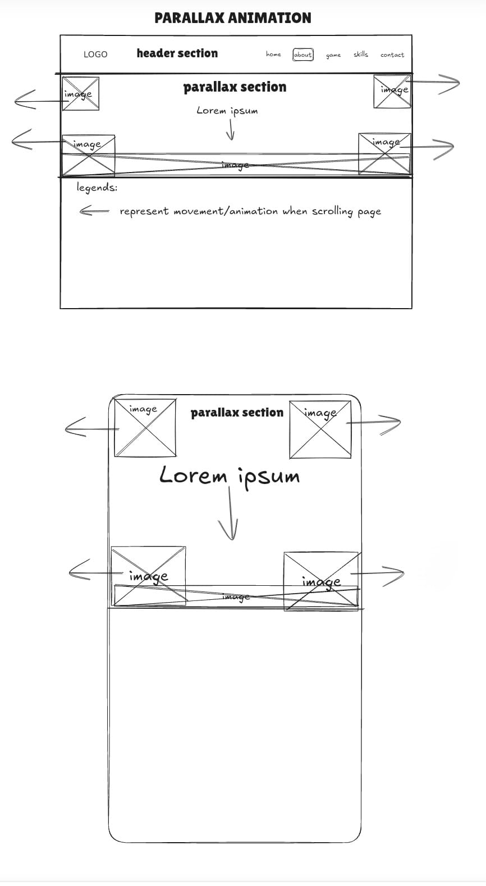

Web development Report
Introduction
My website serves as a comprehensive introduction to who I am and my professional journey from a lowely
intern to ceo and founder of my own company.
It outlines the steps I have taken to achieve success, envisioning myself 10 years into the future as the
Chief Executive Officer of XLaunch, a leading software company.
This platform is designed for those who are interested in learning more about my background, from the
origins of my career to the various countries I have visited around the world.
It provides essential information about me and offers ways for visitors to connect with me for further
inquiries or collaborations.
The website caters to a diverse audience, including employees, the general public, potential investors, and
stakeholders interested in exploring opportunities with my company.
The site structure comprises of 5 key pages: Home, About, Game, Skills, Contact.
Each page serves a unique purpose.
The Home page offers an overview of my personal and professional background, featuring a carousel
that highlights four pivotal stages of my life. You can press on the arrow keys to interact with the
carousel. The page also includes a brief introduction and an image below the carousel,
providing visitors with an initial insight into who I am.
The About delivers a detailed narrative of my professional journey over the last decade, expanding on
each milestone depicted in the carousel. It gives visitors a deeper understanding of my experiences and
achievements, with a "See More" button linking directly to this section.
The Game page showcases a game developed by Artificial Intelligence from XLaunch, allowing users to
engage with the game using a keyboard, demonstrating the cutting-edge capabilities of my company.
The Skills page highlights my proficiency in various programming languages, showcasing the breadth of
my technical expertise.
Lastly, the Contact page provides avenues for reaching out to me and connecting via other social
media platforms.
Inspiration
Three professional portfolio sites that inspired me were:
- WendoJ: I was inspired by Wendoj's use of smooth animations and
consistent branding, and I wanted to bring that same level of engagement to my portfolio. I incorporated
subtle animations like hover effects on buttons and smooth transitions between sections to keep the user
experience dynamic without being distracting. The site’s consistent color scheme and typography also
influenced my approach; I aimed for a cohesive look that ties all the elements of my site together,
reinforcing my personal brand. Additionally, I admired Wendoj.codes' effective use of visual hierarchy,
which I mirrored by structuring my content with bold headers and well-placed sections, guiding visitors
through my portfolio in a clear and engaging way.
- Aras Güngöre: I drew inspiration from Aras
Gungore’s minimalist design, which emphasizes content by keeping the layout clean and straightforward. I
wanted my own site to have a similar feel, where the design doesn’t overshadow the content but instead
highlights my work and story. I also took note of how responsive Aras Gungore’s site is, ensuring a
seamless experience on both desktop and mobile, so I made sure my portfolio would adapt well to
different devices. His clear navigation and easy-to-understand calls to action inspired me to keep my
site’s navigation intuitive, allowing users to explore my projects and background effortlessly.
- Thieb: Thieb’s creative layouts and strong visual storytelling really
stood out to me, and I knew I wanted to bring some of that energy to my portfolio. I was inspired by the
way he breaks away from traditional design structures, using dynamic and unconventional layouts to
create a unique browsing experience. I implemented similar creative touches in my own layout, adding
interactive elements and dynamic visuals that engage visitors and make my portfolio very memorable. The
storytelling aspect of Thieb also influenced how I present my journey and achievements on my site; I
wanted my portfolio to not just showcase my work but to tell my story in a way that feels personal and
visually compelling.
Accessibility
To ensure my site is accessible to users with different abilities, I implemented the following:
- Consistent Layout: I ensured the layout of the pages is consistent, making it easier for users to
predict where they can find information. For example, the navigation bar is present on all pages, which
helps users know where to find it. This could help those that have learning disability like dyslexia or
development disability like adhd by
providing something that is consistent and predictable, which could help them focus more.
- Colour Contrast: I ensured that the text and colours used on the text and backgrounds are
highly contrasting to ensure that people who have visual imparement will have an easier time reading it.
For example, the bright white text colour used is highly contrasting with the darker blue background.
Additionally, I ensured there are several colour changes in the header tab so that people with colour
blindness will be able to see what tab they are on.
- Making certain elements bigger: I ensured that some pictures and texts can be enlargened to help
people with visual difficultites see the images or text better. For example at the home tab, You are
able to enlarge the image of the thumbnails by pressing the next or previous arrows, which allows people
to see the images easier. Additionally, in the skill tab, the boxes can be enlargened when hovered,
making it easier to see the contents better which could potentially help people with visual imparement
Usability
I considered usability in these ways:
- Navigation: I designed the website’s navigation with clarity and user-friendliness as top
priorities. The main menu is prominently placed, featuring links to all major sections such as Home,
About, and Contact. This setup ensures that I can quickly access any part of the site without confusion.
I’ve made sure the navigation menu is consistent across all pages, which helps me maintain a sense of
orientation and easily move between different sections. The logical hierarchy of the menu items further
aids in finding the information I need efficiently.
- Design and Layout: I’ve carefully organized the visual hierarchy to guide my attention to key
information effectively. Headings and subheadings are used to structure the content in a clear and
readable manner, and the layout ensures that important elements are easily accessible. I’ve chosen a
readable font size with appropriate line spacing and contrast to enhance legibility. Additionally, I’ve
implemented responsive design principles so that the site adapts seamlessly to various screen sizes and
devices, including mobile phones, tablets, and desktops. This adaptability ensures a positive user
experience across different platforms.
- Content and Interaction: In designing interactive elements such as forms and buttons, I focused
on user-friendliness. Forms are straightforward to complete, with clear labels and helpful error
messages to guide me in correcting any mistakes. Buttons are clearly labeled and provide immediate
feedback when clicked, enhancing interaction. Interactive elements, including sliders or carousels, are
intuitive and easy to use to ensure a smooth experience.
Learning
Creating this site required learning the following:
- Responsive Design: Creating a responsive website that looks good on various devices and screen
sizes was crucial. I learned how to use media queries and flexible grid layouts to adapt the design to
different screens. By studying responsive design principles and utilizing tools like the responsive
design mode in browser developer tools, I was able to ensure that my website provided a consistent user
experience across desktops, tablets, and mobile devices.
- Advanced JavaScript: When I was working on this project, I had to dive into some advanced
JavaScript techniques to bring the carousel and scroll animations to life. I learned how to manipulate
the DOM effectively using methods like appendChild() and prepend() to reorder elements directly, which
was crucial for implementing the smooth slide transitions. To make the animations more dynamic, I used
classList.add() and classList.remove() for CSS transitions, allowing me to add and remove classes
seamlessly during slide changes.
Additionally, I explored event delegation by attaching event listeners directly to buttons, enabling
direct interaction with "SEE MORE" and "LIKE" actions. One of the most interesting parts was learning to
control element movements based on scroll events—like making trees, clouds, and grass move in response
to the user’s scroll—creating an engaging, interactive experience. Overall, mastering these techniques
helped me build a more dynamic and responsive user interface.
- Web design: To create a visually appealing and user-friendly website, I first needed to
understand core web design principles. This involved learning about visual hierarchy to ensure that
important information stands out, color theory to choose complementary colors that align with the
brand’s identity, and typography to select readable and stylish fonts.
To impliment them I had to learn advanced CSS coding techniques. Learning to create custom animations
using @keyframes was a game-changer
for me. It allowed me to add smooth transitions, scaling, and fading effects that made the page feel
alive and interactive, especially with elements like carousels and navigation buttons.
The parallax effect was another challenge I had to master. By fixing the background attachment and
carefully layering images, I could create a sense of depth that made sections feel immersive and
visually captivating. Making the design responsive was equally important, so I spent time refining media
queries to ensure that the layout adapted seamlessly to different screen sizes. This not only improved
accessibility but also ensured that the website looked great on any device.
Evaluation I: Success
I believe the way the visuals turned out for the website were successful and that it is very visually
appealing. The use of the parallax effect and background images creates an engaging and dynamic visual
experience for visitors. I also feel that the header and navigation are clear and well-styled, which
improves both usability and aesthetics. The structured content with a welcoming header and engaging sections
helps to create a strong first impression and provides a clear overview of my work. I am also very proud of
my carousel design, where you can view my journey and the pivotal points of my life with each click of the
carousel button, giving people insight about me as a person and the things I had to do to be successful.
Evaluation II: Improvements
One aspect that could be improved is the game section of the site. Although it is very cool that I was able
to integrate my own game into the website, there are multiple flaws with it. Firstly, it requires access to
a keyboard, which means that people viewing the website on mobile or tablets will require additional
peripherals like a keyboard. Secondly, in order to make it responsive, the window size of the game can get
very small on certain devices hence you will need to scroll around the game to find your game character,
which will be a
major inconvenience. I would love to improve it such that the game camera follows the game character such
that the game character will always be in view in the center of the game window despite the screen size.
Resources
Resources used in the creation of the site include:
- Meta AI: Most of the images generated are done by meta AI, with editings done to include my face
on them
- Google fonts: the fonts used were imported from google. This help with visuals in making the
website more visually appealing
- W3School: Learned how to do parallax coding to my website more visually appealing
Appendices
Below are the wireframes for my inital design idea as well as how I would like my website to function.

